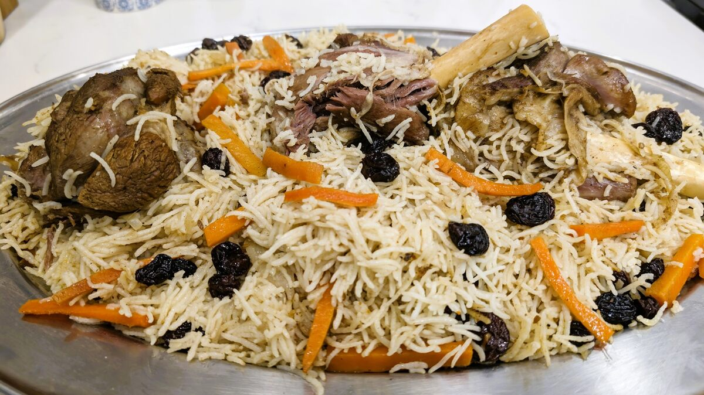

Home
Afghani Kabuli Pulao

Description
Afghani Pulao is a traditional and exquisite dish known for its tender meat, aromatic basmati rice, and sweet carrots and raisins. This dish is a delightful blend of savoury and sweet flavours, perfect for special occasions and family gatherings.
Afghani Pulao, also known as Kabuli Pulao, is a classic Afghan dish that features slow-cooked meats paired with basmati rice, carrots, and raisins. The dish is characterized by its rich Flavors from spices like cumin, cardamom, and cloves, and the sweetness from carrots and raisins, making it a harmonious and aromatic meal.
Ingredients
- 3 lamb shanks (approximately 3 kilograms)
- 1 cup oil
- 1⁄4 cup ghee
- 3 white onions, sliced
- 1 tbsp salt
- 2 tbsp cumin powder
- 1 tbsp whole cumin
- 1 tsp green cardamom
- 1 tsp cloves
- 1 tsp peppercorn
- 2 black cardamom pods
- 7 cups water
- 500 grams carrots, sliced into batons
- 250 grams fiery raisins
- 2 tbsp sugar
- 3 cups 3 basmati rice, washed and soaked for 1 hour
- 1 tbsp cumin powder
Steps
- In a large cooking pot, heat 1 cup of oil and 1/4 cup of ghee over medium heat.
- Add 3 sliced white onions and fry for about 5 minutes until they turn translucent.
- Place the lamb shanks into the pot. Season with 1 tablespoon of salt and 2 tablespoons of cumin powder.
- Sear the meat with the spices for around 10 minutes until a nice sear develops and an aromatic fragrance arises.
- Add 1 tablespoon of whole cumin, 1 teaspoon of green cardamom, 1 teaspoon of cloves, 1 teaspoon of peppercorn, and 2 black cardamom pods into the pot.
- Fry these spices together with the meat for an additional 2 minutes.
- Pour in 7 cups of water and bring the mixture to a boil.
- Remove any excess fat or impurities that rise to the top.
- Cover the pot with a lid and let it cook on medium heat for about 2 hours until the meat becomes tender and easily falls off the bone.
- In a separate pan, heat half of the remaining ghee.
- Add 500 grams of sliced carrots and fry for 5 minutes.
- Include 250 grams of fiery raisins and fry for an additional 2 minutes.
- Sprinkle 2 tablespoons of sugar over the carrots and raisins.
- Reduce the heat, cover with a lid, and let it cook slowly for 20 minutes until the carrots are tender and the raisins plump up.
- Once the meat is fully cooked, add the pre-soaked and washed basmati rice into the pot.
- Increase the heat and allow the rice to surface. Gently stir to evenly distribute the rice in the pot.
- Sprinkle 1 tablespoon of cumin powder over the rice.
- Add the previously prepared fried carrots and raisins to the pot, ensuring even distribution.
- Cover the pot with foil and then with a lid to create a tight seal.
- Reduce the heat to low and let it cook for 30 minutes until the rice is fully cooked and each grain remains distinct.
- Once cooked, gently fluff the rice with a fork.
- Plate the Afghani Pulao, showcasing the tender lamb shanks surrounded by flavourful rice, carrots, and raisins.